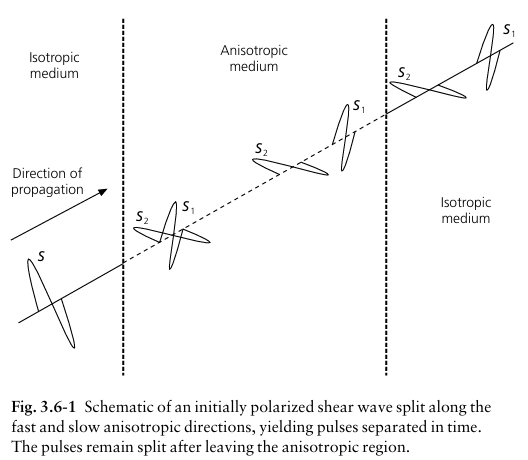
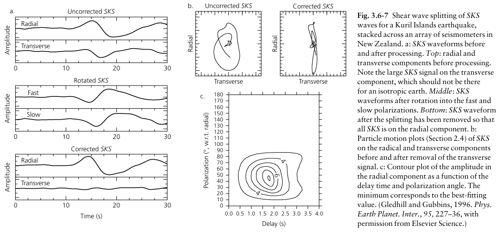
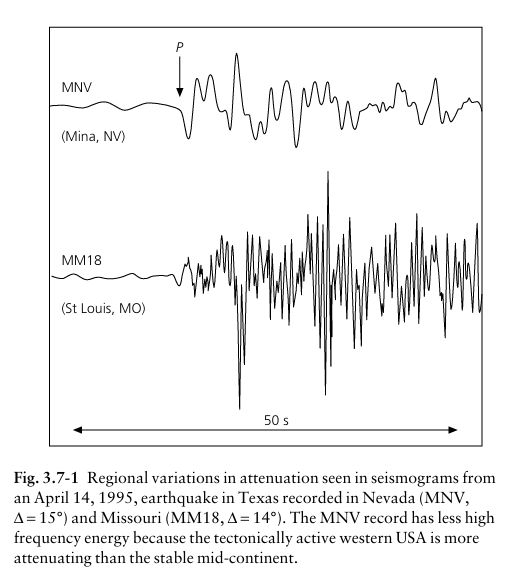
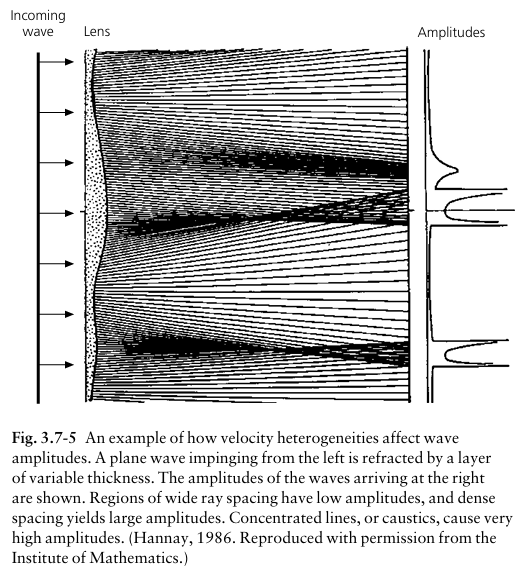
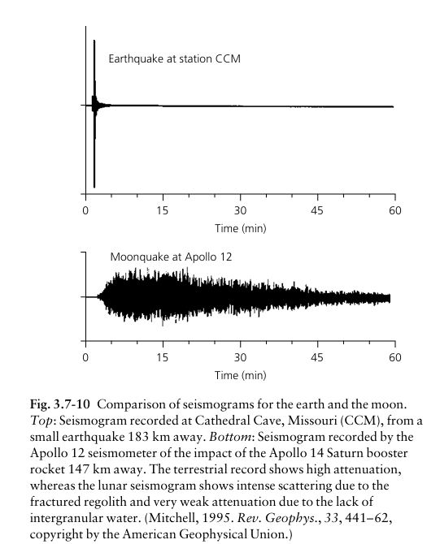
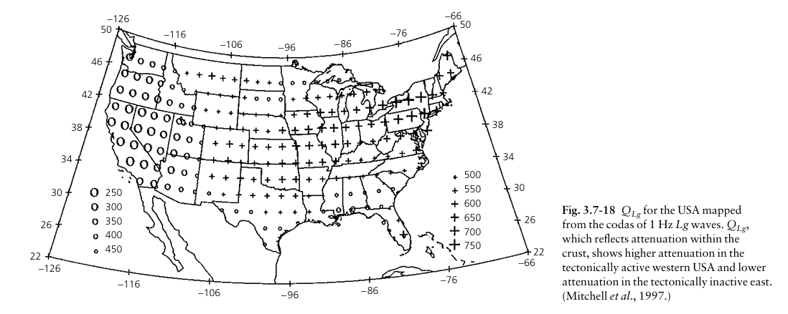

3.1 導論 (Introduction)
本單元確立了地震學的核心目標：測定地球內部的地震速度分布，進而推論彈性性質、礦物組成、化學成分及熱狀態。
- 相對於重力或磁力數據，地震學數據具有極高的解析力。
- 能精確標定如「核函交界 (CMB)」的深度，及其兩側物理性質的劇烈變化。
大師的生活類比
如果想知道一個神秘箱子裡裝什麼，用「重力與磁力」探勘就像是幫箱子秤體重和測磁性，只能猜個大概；而「地震波」就像是帶地球去照超音波！它能精確看見哪裡是液體、哪裡是固體，連器官（地核）的邊界都看得一清二楚。
3.2 折射地震學 (Refraction Seismology)
此單元介紹了測定地下深處速度的最簡單方法，將地球視為平坦且波速均勻的層狀模型。
- 平層法： 透過分析直接波、反射波與頭波 (Head wave) 的走時曲線，反推地層的速度與厚度。
- 傾斜界面： 當界面不水平時，需使用逆向測線 (Reversed profile) 來修正視速度，求得真實傾角與深度。
- 波長與解析度： 地震波只能「看見」大於其波長的構造，解析度取決於觀測頻率。
🧑🏫 大師進階 Q&A
Q1. Pg、Pn、PmP 是什麼？
Pg 是在地殼內部直接傳播的 P 波 (直達波)。
Pn 是當入射角達到臨界角時，沿著地殼與地函邊界 (Moho面) 滑行的「頭波 (Head wave)」。
PmP 則是碰到 Moho 面後直接「反射」回地表的 P 波。
Q2. 如何發現 Moho 面？
1909年，克羅埃西亞科學家莫荷洛維奇 (Mohorovičić) 在分析地震紀錄時，發現當測站距離震央超過某個距離後，第一個到達的地震波不再是地殼內的直達波 (Pg)，而是從更深處「抄捷徑」過來的波 (Pn)。這證明了地下深處必定存在一個波速突然大增的界面，也就是我們現在所稱的莫氏不連續面 (Moho)。
Q3. 全球 Moho 面的深度分布為何？
全球 Moho 面深度並不均勻，平均約 33 公里。海洋地殼非常薄，Moho 面深度大約只有 6 到 8 公里；而大陸地殼較厚，平均約 30 到 50 公里，在造山帶（例如西藏高原或安地斯山脈）下方甚至可以深達 70 公里以上，這就是所謂的「山根」效應。
3.3 反射地震學 (Reflection Seismology)
這是地殼精細構造探測與石油天然氣勘探最常用的高解析度方法。
- 走時曲線與 Dix 方程式： 反射波走時呈雙曲線。可利用各層的均方根 (rms) 速度求得每一層的層速度 (Interval velocity)。
- 共同中點 (CMP) 疊加： 透過將相同中點的紀錄進行 NMO (正常時差) 修正後相加，能大幅增強反射訊號並消除雜訊。
- 遷移 (Migration)： 消除衍射偽像（如「蝴蝶結」狀構造），將反射面歸位到真實地理位置。
3.4 球面地球中的地震波 (Seismic Waves in a Spherical Earth)
當地震波傳播跨越數千公里時，地球的曲率與內部層狀的速度結構將主導射線路徑。我們必須引入球面座標下的物理量。
射線參數 (Ray Parameter, $p$)
在球形地球模型中，根據 Snell's Law 的球面修正版：
- $r$：距地心的半徑。
- $i$：射線與法線的夾角（入射角）。
- $v$：該深度的地震波速。

圖 3.4-1：球面地球射線幾何與 $p$ 參數之定義
速度梯度與走時特徵
速度隨深度的變化會直接反映在走時曲線（T-Δ 圖）的形狀上：

圖 3.4-2：速度梯度劇變與低速層導致的走時異常
🧑🏫 大師進階 Q&A
Q4. 甚麼是 Ray parameter (射線參數)？
在球面地球中，根據斯涅爾定律 (Snell's law)，射線參數定義為 p = (r × sin i) / v（r是距地心半徑，i是入射角，v是波速）。
最重要的是：對於同一條地震射線，p 值從頭到尾都是常數！ 這個常數就像是這條射線的「身分證」，它決定了這條波會彎曲到什麼程度，以及它能穿透到地球的哪一個最深點 (Turning point)。
Q5. 為何地震波遇到「高速帶」，測站會收到多次到時 (Triplication)？
當深度增加，波速發生「劇烈增加」時（例如地函 410 公里與 660 公里的礦物相變帶），地震波會被強烈地折射回地表。
大師類比： 這就像你在賽車場的不同彎道超車。有些波走淺層慢速路徑，有些波大角度潛入深層高速帶再衝上來，導致「不同出發角度的波，最後卻在同一個距離的測站交會」。結果就是，同一個測站會先後記錄到三個不同路徑的 P 波（稱為 Triplication 三支波現象）。
Q6. 為何地震波遇到「低速帶」，測站會收不到波 (Shadow Zone)？
根據斯涅爾定律，當地震波從高速層進入低速帶 (LVZ) 時，射線會「向下急彎」（偏向法線）。
這會導致原本應該均勻分布回到地表的波束，在某個範圍內被強制拉扯向深處，使得地表形成一個收不到任何直達波的空白區域，這就是所謂的陰影帶 (Shadow Zone)。
3.5 體波走時研究 (Body Wave Travel Time)
將理論應用於全球尺度，建立了地球內部的基本分層模型（如 Jeffreys-Bullen 與 IASP91 模型）。
🧑🏫 大師進階 Q&A
Q7. 如何發現核幔邊界 (Core-Mantle Boundary)？
1906年，Oldham 發現地震的 P 波在距離震央超過大約 100 度的地方，會突然「消失」形成陰影帶。他推斷地球深處有一個導致波速急遽下降的巨大核心（低速帶效應）。到了 1914 年，Gutenberg 利用地震波的走時數據，精確計算出這個核幔邊界（古氏不連續面）的深度約為 2900 公里。
Q8. 各種體波波相 (Phases) 介紹
地震波路徑就像護照上的海關戳章：
P / S：在地函中傳播的 P 體波與 S 體波。
K：在外核中傳播的 P 波 (外核為液態，無 S 波)。
I / J：在內核中傳播的 P 波 (I) 與 S 波 (J)。
c / i：碰到核幔邊界反射 (c)，碰到內外核邊界反射 (i)。
p / s (小寫)：從震源「先向上」打到地表再彈回內部的波 (Depth phases，用來定震源深度)。
Q9. Core phases (地核波相) 介紹
這些波穿越了地球的心臟！例如：
PKP：地函(P) -> 外核(K) -> 地函(P)。
PKIKP：一路貫穿到底！地函(P) -> 外核(K) -> 內核(I) -> 外核(K) -> 地函(P)。
SKS：地函(S) -> 入外核轉成P波(K) -> 出外核轉回S波(S)。
Q10. 甚麼是 Antipodal focusing (對蹠點聚焦)？
想像地球是一個巨大的玻璃球透鏡。當地震發生時，向四面八方發散的地震波，在繞過地球或穿透地核後，會非常精準地在地球正對面 180 度的地方 (對蹠點) 完美匯聚。這會導致在距離震央最遠的對面，反而能測量到異常強烈的地震波振幅！
Q11. 解釋上部地函構造 (Upper mantle structure)，低速帶與高速帶的說明
低速帶 (LVZ)：大約在深度 100~200 公里處（軟流圈），因為高溫導致岩石呈現「部分熔融 (Partial melt)」，波速在此處反常下降。
高速帶 (過渡帶)：在 410 公里與 660 公里深處，岩石化學成分沒變，但因為壓力極大，礦物晶格發生「相變 (Phase transition)」被擠壓得更緻密（橄欖石 -> 瓦茲利石 -> 鈣鈦礦），導致波速在這兩個深度呈現階梯式的劇烈上升。
3.6 地球各向異性構造 (Anisotropic Structure)
🧑🏫 大師進階 Q&A
Q12. 說明各向異性 (Anisotropic earth structure)
地球內部並不是完美的均質體。各向異性指的是「地震波速會因為傳播方向或震動方向的不同而改變」的現象。這就像是順著木頭紋理劈柴很容易（波速快），但垂直紋理劈柴就很難（波速慢）。這通常是因為地函對流導致橄欖石晶體產生定向排列 (LPO) 所引起。
Q13. 說明剪力波分離 (Shear Wave Splitting)？
當一個 S 波進入帶有各向異性（有紋理）的介質時，它會被強制「拆解」成兩個互相垂直的波：一個沿著最容易震動的方向傳播（快波），另一個沿著最難震動的方向傳播（慢波）。結果測站會接收到兩組有時間差的 S 波脈衝，這就是剪力波分離。
Q14. 為何使用 SKS 波相研究剪力波分離？
這是地震學家非常聰明的一招！因為外核是液態的，SKS 波進入外核時必須轉換成 P 波傳播，這會「徹底洗掉震源端 S 波的偏振特徵」。當它在核幔邊界轉回 S 波時，必然是純粹的 SV 偏振。因此，如果我們在測站觀測到 SKS 波發生了剪力波分離（出現了 SH 分量），我們就能 100% 肯定：這個各向異性絕對是發生在「測站正下方的接收端地函」，完美排除了震源路徑的干擾！
Q15. 解釋圖 3.6-1 與 3.6-7
圖 3.6-1 (剪力波分離示意圖)： 顯示了一個初始偏振的 S 波，在進入各向異性區域後，分裂成互相垂直的快波 (S1) 與慢波 (S2)，且兩者之間產生了時間延遲。
圖 3.6-7 (各向異性分布)： 通常展示的是測站觀測到的剪力波「快波偏振方向」。這些線段的方向，往往與地表板塊的運動方向，或是地函內部的熱對流流動方向高度一致！
3.7 衰減與不彈性 (Attenuation & Anelasticity)
真實的地球並不是完美的彈性體。當地震波傳遞時，其能量會因為幾何擴展、散射或轉化為熱能而逐漸減弱，探討這些衰減特性可以幫助我們了解地殼與地函的熱狀態及流體分布。
🧑🏫 大師進階 Q&A 與圖表解析
Q16. 波傳遞時能量如何衰減？
地震波在地球內部傳播時，能量衰減主要來自三個機制：
1. 幾何擴散 (Geometrical Spreading)： 就像水池裡的水波紋向外擴散，波前（Wavefront）面積越來越大，單位面積所分配到的能量自然就變弱了。
2. 散射 (Scattering)： 當地震波遇到地下不均勻的構造（如斷層帶、岩層碎裂帶）時，部分能量會朝著四面八方反射或折射而分散掉。
3. 本質衰減/不彈性吸收 (Intrinsic Attenuation / Anelasticity)： 因為地球岩石並非完美彈性體，當波通過時，岩石顆粒間的微小摩擦或部分熔融體的黏滯性，會將地震波的力學動能轉換為「熱能」而消耗掉。科學家用「品質因數 (Q值)」來描述，Q值越大代表衰減越少、越接近完美彈性。
Q17. 解釋圖 3.7-1：區域性的衰減差異

此圖展示了 1995 年發生在德州的同一個地震，分別在內華達州 (MNV) 與密蘇里州 (MM18) 測站所記錄到的地震波形對比。
雖然兩個測站距離震央的距離差不多（Δ 約 14~15 度），但波形特徵截然不同：
上方 MNV 測站 (內華達)： 高頻能量明顯衰減消失，波形顯得平緩。這是因為地震波穿過了美國西部「構造活躍、地溫較高」的區域，衰減效應非常強（低 Q 值）。
下方 MM18 測站 (密蘇里)： 保留了極多高頻且劇烈震盪的能量。因為地震波穿過了美國中部「穩定古老的大陸地盾 (Craton)」，岩石冰冷堅固，衰減效應極弱（高 Q 值）。
Q18. 解釋圖 3.7-5：速度不均勻對波幅的「透鏡」效應

此圖展示了地下速度的不均勻構造如何像「透鏡」一樣影響地震波的振幅大小。
當左側平行的平面波穿過厚度變化或速度不同的地層時，射線路徑會發生偏折與聚焦：
射線發散區： 射線間隔變寬（波束散開），該區域接收到的振幅就會大幅降低（如圖右側低平的訊號）。
射線聚焦區： 射線密集甚至交會重疊（物理上稱為焦散線 Caustics），會導致極高的能量聚集（如圖右側突出的尖峰振幅）。這就是為什麼有時候同一個地震，某些局部的災情會因為地下構造聚焦而特別嚴重。
Q19. 解釋圖 3.7-10：地球與月球的地震圖對比

這是一組非常經典且極端的對比圖！
上方（地球）： 在距離 183 公里的測站，地震波的能量很快就平息了。因為地球內部含有水分且地溫較高，具有很強的「本質衰減」將波能消耗掉。
下方（月球）： 阿波羅 12 號測站錄下 147 公里外火箭推進器撞擊的震動，訊號竟然持續了一個多小時！這是因為月球表面是一層極度乾燥的風化碎屑層 (Regolith)。沒有液態水代表幾乎沒有本質衰減（極高 Q 值），而破碎的岩層導致地震波在裡面瘋狂地反射與散射 (Intense scattering)。
大師類比： 月球就像是一個由堅硬金屬打造、完美隔音的空房間，在裡面敲一下鐘，聲音（波）無法被吸收，只能不斷撞擊牆壁產生無窮無盡的迴音！
Q20. 解釋圖 3.7-18：美國本土 Q_Lg 分布圖

此圖呈現了美國本土 1 Hz Lg 波段的「品質因數 (Q值)」空間分布。Q值直接反映了地殼吸收地震波能量的程度（Q值越小，衰減越強）：
美國西部（圖左，大圓圈標示區域）： Q值非常低（約 200-400），表示地震波衰減快速。因為西部屬於板塊交界帶，伴隨造山運動與火山作用，地殼溫度高且可能有部分熔融，強烈吸收波能。
美國東部與中部（圖右，十字型標示區域）： Q值很高（約 500-700 以上），表示地震波可以傳遞得很遠而不易衰減。因為該區是古老的穩定大陸板塊，岩層冰冷且緻密。
這張地圖完美解釋了前面 Q17 (圖 3.7-1) 所看到的現象，並證實了「地質構造活躍度」與「地震波衰減特性」息息相關。